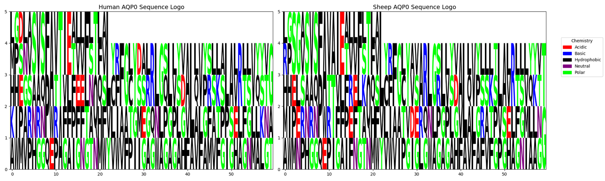

The SHuffle T7-B strain was chosen as the chassis organism. The SHuffle strain constitutively expresses disulfide bond isomerase DsbC in the cytoplasm, which facilitates the correct formation of disulfide bonds in proteins under oxidative conditions. Additionally, DsbC functions as a molecular chaperone, assisting in the proper folding of proteins into their correct conformations. The T7 RNA polymerase gene in this strain is integrated into the chromosomal lactose operon region, enabling stable expression of T7 RNA polymerase and effectively reducing background expression levels of the target gene. The strain is compatible with various plasmid vectors based on T7 promoters and non-T7 promoters, such as the pET series, pGEX, and pMAL. It is suitable for the expression of proteins requiring disulfide bond stability and toxic proteins.
Currently, there are two sources of commercialized SHuffle T7 strains, derived from E. coli K12 and BL21. In the SHuffle strain, the B strain background is more suitable than the K12 strain background for expressing proteins containing disulfide bonds. The B strain demonstrates higher efficiency in enzyme activity and protein expression levels. Moreover, the B strain lacks flagellar genes and outer membrane proteins that can interfere with protein folding, resulting in better performance under oxidative stress conditions compared to the K12 strain.[1]
The B strain lacks flagellar genes, DNA cytosine methyltransferase, and outer membrane protease OmpT (OmpT protease), and it also has an additional type II secretion system, which is more favorable for protein secretion[2]. In terms of biosafety, according to the guidelines of the National Institutes of Health (NIH), the E. Coli B strain is classified as Risk Group 1 (RG-1), meaning it typically does not cause disease in healthy adults and poses low individual and environmental risks.
References
[1]Lobstein J, Emrich C A, Jeans C, et al. SHuffle, a novel Escherichia coli protein expression strain capable of correctly folding disulfide bonded proteins in its cytoplasm. Microb Cell Fact, 2012, 11(1): 753DOI: 10.1186/1475-2859-11-56
[2]Yoon, S.H., Han, MJ., Jeong, H. et al. Comparative multi-omics systems analysis of Escherichia coli strains B and K-12. Genome Biol, 13, R37 (2012).PMID: 22632713
Genetic Pathway Design
Production of the Therapeutic Molecule RNF114
We have decided to use a non-invasive biological factory loaded onto contact lenses to continuously release therapeutic drugs for the treatment of cataracts. We have chosen RNF114 as the main component of our therapeutic drug and selected the SHuffle E. coli expression system as our chassis. Therefore, we decided to express RNF114 in SHuffle by introducing exogenous genes.
We obtained the human RNF114 sequence from NCBI. Since prokaryotic cells lack the splicing mechanisms present in eukaryotic cells, we aim to extract and connect its CDS sequence using PCR to obtain a gene sequence without introns, thus overcoming the lack of splicing modifications.
However, ocular drug delivery is not as straightforward as we anticipated. The intraocular efficiency of non-invasive drug delivery systems is still severely hindered by the eye's defense barriers—the antimicrobial clearance mechanism of the tear film, the multiple barriers to transcorneal drug delivery, and the dilution and washout by aqueous humor all significantly interfere with and impede our drug delivery effectiveness.[1] Existing methods like liposome encapsulation are also challenging in terms of loading and achieving sustained release within bioengineering applications. Therefore, we intend to resolve the drug delivery issues through protein modification techniques by enhancing permeability, stability, and targeting.
Enhancing Permeability
The target protein synthesized by the engineered bacteria needs to be guided by a signal peptide to be released extracellularly through the cell membrane. We selected pelB as the signal peptide for the target protein. The PelB signal peptide is derived from the amino-terminal leader sequence of PelB of Erwinia carotovora. It is a heterologous signal peptide currently widely used in the Escherichia coli expression system and has a wide range of applications in the secretion and expression of human recombinant therapeutic proteins.[2]
The TAT peptide can enhance membrane permeability through different mechanisms and has significant potential in promoting the delivery of drug molecules to target cells.[3] TAT-(47–58) is a cell-penetrating peptide derived from the HIV-1 regulatory protein TAT and can be used in multiple systems, including eyes. Studies have shown that conjugating TAT peptides with RNF114 for drug delivery significantly improves the opacity in cataract models.[4]
We plan to use gene fusion technology to modify the RNF114 protein with the TAT peptide sequence, increasing its transmembrane capability. At the same time, flexible linker peptides will be used to avoid affecting the drug's three-dimensional structure, allowing it to smoothly cross the corneal barrier and exert its effect.
Although cell-penetrating peptides (CPPs) effectively promote the endocytosis of cell membrane-impermeable molecules, leading to significant progress in the application of bioactive macromolecules, most endocytosed proteins remain trapped in endosomes and are eventually degraded in lysosomes. Therefore, the endosomal escape mechanism of drugs is also a crucial consideration in drug design.
To enhance drug permeability and endosomal escape, we identified the GALA peptide. GALA is a synthetic amphiphilic peptide derived from a mutated sequence of HA2, and its application in delivering drugs or nucleic acids with cationic liposomes and nanocarriers has shown significant membrane-disruptive properties. Moreover, studies have found that a newly engineered peptide, GALA3, significantly improves the endosomal escape efficiency of BLF1 fusion proteins.[5] Therefore, we plan to attach it to the drug molecule to achieve endosomal escape functionality.
Enhancing Stability
Due to the antimicrobial clearance mechanism of the tear film, RNF114 protein is prone to degradation. To address this issue, we first used the ExPASy tool to predict the protein's degradation-prone sites, aiming to enhance its stability through modifications. Initially, PEGylation was considered to protect vulnerable sites. However, PEGylation and glycosylation typically require chemical conjugation methods performed in vitro, making it difficult to integrate with our gene pathway approach.
Directed evolution of proteins might be a good method and has been frequently used in past projects (such as TU Dresden iGEM 2022). However, since we couldn't find a way to link mutations in the RNF114 protein to cell survival, this approach isn't feasible. The use of protease inhibitors was also rejected due to potential impacts on normal cellular activities.
Ultimately, we focused on the modification with rare amino acids and the simultaneous release of polyols.
Simultaneous Release of Polyols
Polyols stabilize the native folded conformation of proteins by preferential exclusion and enhanced hydration. In their native conformation, certain cleavage sites may be concealed or partially shielded by the internal structure of protein molecules, making it difficult for enzymes to access and bind to them.
Polyols form a hydration layer around proteins (a result of the preferential exclusion effect). This hydration layer acts as a "protective shield" on the protein surface, spatially hindering direct contact between proteases and the protein surface. Enzyme molecules need to penetrate this hydration layer to approach the protein surface and bind to cleavage sites. This steric hindrance effect reduces the effective collision frequency between enzymes and proteins, thereby decreasing the rate of enzymatic degradation.[6]
Protein aggregates typically have a larger surface area, and their structure may be more loose and unstable, making cleavage sites more exposed. Therefore, protein aggregates are generally more susceptible to protease degradation than monomeric proteins. Polyols effectively inhibit protein aggregation, maintaining proteins in monomeric or correctly folded oligomeric forms. This reduces the number of protein aggregates that are prone to enzymatic degradation, thereby indirectly lowering the overall rate of enzymatic degradation.
Thus, studies have shown that hydroxyl-containing organic compounds (sugars or polyols) can enhance protein stability.
Coincidentally, we found that the hyaluronic acid (HA) secretion module, retained to alleviate dry eye symptoms during contact lens wear, has unexpected functions. Besides moisturizing the eye surface and relieving dry eye, HA, as a polysaccharide, is also a promising excipient for ocular drug delivery. HA has high biocompatibility, biodegradability, and low immunogenicity, which can improve drug bioavailability. Existing studies include using hyaluronic acid for drug delivery to the cornea, conjunctiva, and anterior segment of the eye. For instance, pilocarpine's local ocular adjuvant acts on the sphincter pupillae.[7]
Based on this, we speculate that this drug can maintain its stability from the ocular surface to the aqueous humor. Therefore, the simultaneous release of HA can ensure the stability of the drug molecules.
Rare Amino Acid Modification
The inspiration for this approach comes from a paper on "treating diabetes by eating cookies." The team introduced an aminoacyl-tRNA synthetase-tRNA pair into mammalian cells, which can recognize stop codons and incorporate special amino acids at these sites, allowing insulin mRNA containing stop codons to complete translation only in the presence of these special amino acids.[8]
We used ExPASy PeptideCutter to predict the sensitive sites of RNF114 for protease degradation. Statistics showed that phenylalanine at positions 151, 191, 27, 99, and 206 could be cleaved five times by enzymes, so we selected these five sites for replacement, modifying their codons to UAG.
The plasmid constructed after RNF114 protein mutation is as follows:
The pEVOL-pAzf plasmid can produce a tRNA synthetase/tRNA pair that recognizes UAG and carries p-azidophenylalanine:
By introducing both plasmids into the target strain, phenylalanine at the target sites in the RNF114 protein can be replaced with p-azidophenylalanine. The structures of the two amino acids are similar, so the replacement will not significantly affect the activity of RNF114, and the azido group can interfere with protease recognition, reducing the probability of cleavage.
To address the issue of the rare amino acid source in contact lenses, we chose to embed it directly in hydrogel. We selected pHEMA/β-CD-CrHA (poly(2-hydroxyethyl methacrylate-methacrylic acid copolymer-hyaluronic acid-β-cyclodextrin) hydrogel). The β-CD cavity is hydrophobic, the outer surface is hydrophilic, and HA provides strong hydrophilic groups. As an amphiphilic amino acid, p-azidophenylalanine will have a strong interaction with this hydrogel, allowing it to be released slowly.
Modifications to Enhance Protein Targeting
In order to achieve precise drug delivery and prevent harm caused by excessively high concentrations of drugs in tears and aqueous humor, the targeting specificity of the drug is crucial. Therefore, to ensure that the RNF114 protein can accurately reach the lens, we have chosen the aquaporin AQP0 on the membrane of lens fiber cells as the targeting marker, and designed short peptides that can specifically bind to it for precise delivery.
Why Choose AQP0?
High Conservation Across Species: Although the PDB database has only resolved the structure of AQP0 from sheep, this protein is highly conserved, with a 90.8% similarity between humans and sheep, making cross-species application feasible (details available in the software analysis).
Chart: Comparison of amino acid frequency distribution between human and sheep AQP0.

Figure 7: Sequence similarity: 90.8292%
Lens-Specific Expression: In mammals, AQP0 is almost exclusively expressed in lens fiber cells, accounting for approximately 50% of the membrane proteins in this tissue. Its expression in other tissues is minimal or virtually absent.
AQP0 Overview and Design Requirements for Targeting Peptides
AQP0 is primarily divided into two types: junctional type and non-junctional type. The former has poor water permeability and is mainly used for intercellular junctions; the latter exhibits high water permeability and primarily maintains the osmotic balance of the lens. When the C-terminus of non-junctional AQP0 is cleaved by proteases, the bridging between the N-terminus and C-terminus breaks, leading to conformational disorder in the N-terminus and conversion to the junctional type of AQP0.
The C-terminus of AQP0 can interact with various proteins, including connexins, γE-crystallin, intermediate filaments, and Ezrin. AQP0 can also form connections with other AQP0 tetramers through extracellular loop C and loop A.
When selecting targeting sites on AQP0, it is essential to ensure that the binding of short peptides does not interfere with its water permeability function, avoid sequences that are cleaved or altered during cleavage, avoid interaction sites with other proteins, and guarantee the specificity of the binding sites.
Brief introduction of AQP0
Aquaporin 0 (AQP0) , a protein in the eye lens, exists in two forms: junctional AQP0, which has low water permeability and aids in cell adhesion, and non-junctional AQP0, which has high water permeability and maintains osmotic balance.[9]
Non-junctional AQP0 converts to junctional AQP0 when its C-terminus is cleaved, causing structural changes that close the water channel. AQP0 interacts with many proteins through its C-terminus, such as：connexins, γ-crystallins, intermediate filaments, and Ezrin.[10]
Method of target peptide designing
ProEpiphary Development: A bioinformatics and AI-driven software for homolog screening, protein surface analysis, epitope identification and affinity prediction.
AI-Assisted Design: Direct AI generation of binding peptides with subsequent AutoDock validation.
Structural Biology Approach: Using RFdiffusion, ProteinMPNN, and AlphaFold2 for peptide design[11][12]
Method of Target Peptide Design
Method 1: ProEpiphary Development
To address inefficiencies in targeted peptide design, we developed ProEpiphary, a bioinformatics and AI-driven software for homolog screening, protein surface analysis, epitope identification and affinity prediction to assist target peptide discovery.
Method 2: AI-Assisted Direct Design
We directly informed AI that we needed to design short peptide sequences that bind to the AQP0 protein, providing it with the regions that should be avoided, and then obtained several short peptide sequences. We used AutoDock for docking, performed affinity scoring, and selected the sequence with the highest score: LVFFARKVLLK. However, the reliability of this result is relatively low, and it was designed merely to facilitate the design of fusion proteins and plasmids.
Method 3: Structural Biology Approach
Combining structural biology and computational design, we used tools such as RFdiffusion, ProteinMPNN, and AlphaFold2 to design short peptides targeting AQP0.[11][12]
1. Identification of Key Residues
Referring to the structural information of AQP0 (PDB ID: 1YMG, UniProt ID: P06624), we identified the amino acid residues in its key functional regions. We avoided these key residues in our design to ensure that the binding of the targeted peptide segment does not affect the basic functions of AQP0.
2. Structure Generation and Peptide Design
RFdiffusion:generate the structure of peptides
As shown in Figure 2, RFdiffusion is a protein structure generation method based on the diffusion model. It can achieve unconstrained protein structure generation without conditional information.[11]
We truncated the functional amino acid residues in the red region, then set the peptide length to 10. Using RFdiffusion, we generated a total of 10 peptides and selected the optimal peptide, inputing it into ProteinMPNN to generate the sequence.
The backbone coordinates of the generated short peptide:
Atom
Amino acid
index
x
y
z
N
GLY
1
-6.718
14.831
-2.556
CA
GLY
1
-7.472
14.078
-3.551
C
GLY
1
-8.49
14.963
-4.257
O
GLY
1
-8.72
14.825
-5.459
N
GLY
2
-9.007
15.796
-3.546
CA
GLY
2
-10.005
16.693
-4.115
C
GLY
2
-9.392
17.598
-5.176
O
GLY
2
-9.979
17.815
-6.235
N
GLY
3
-8.251
18.092
-4.917
CA
GLY
3
-7.632
18.985
-5.888
C
GLY
3
-7.254
18.239
-7.161
O
GLY
3
-7.433
18.749
-8.268
N
GLY
4
-6.856
17.042
-7.023
CA
GLY
4
-6.479
16.263
-8.196
C
GLY
4
-7.699
15.9
-9.033
O
GLY
4
-7.667
15.978
-10.261
N
GLY
5
-8.733
15.494
-8.37
CA
GLY
5
-9.953
15.154
-9.092
C
GLY
5
-10.506
16.362
-9.838
O
GLY
5
-10.946
16.249
-10.982
N
GLY
6
-10.405
17.485
-9.256
CA
GLY
6
-10.865
18.698
-9.923
C
GLY
6
-10.034
18.991
-11.165
O
GLY
6
-10.573
19.337
-12.217
N
GLY
7
-8.774
18.784
-11.042
CA
GLY
7
-7.899
19.014
-12.186
C
GLY
7
-8.163
18.002
-13.294
O
GLY
7
-8.183
18.351
-14.474
N
GLY
8
-8.462
16.827
-12.904
CA
GLY
8
-8.754
15.798
-13.895
C
GLY
8
-10.092
16.055
-14.577
O
GLY
8
-10.233
15.855
-15.783
N
GLY
9
-11.006
16.463
-13.831
CA
GLY
9
-12.322
16.712
-14.407
C
GLY
9
-12.315
17.962
-15.278
O
GLY
9
-12.98
18.013
-16.313
N
GLY
10
-11.481
18.853
-14.95
CA
GLY
10
-11.389
20.06
-15.763
C
GLY
10
-10.681
19.783
-17.083
O
GLY
10
-11.121
20.232
-18.141
3. ProteinMPNN:design suitable peptide sequences
As shown in Figure 3, ProteinMPNN can generate amino acid sequences that can fold into the given backbone structure.We select three candidates with the strongest binding affinity from 100 generated peptide sequences.[12]
Select three sequences with the optimal glob scores:
4. AlphaFold2:predict the structure of the candidate peptides
AlphaFold2 can predict three-dimensional structures based on amino acid sequences and provide folding confidence (pLDDT) and similarity scores (PTM). We predict the structures of the peptide-AQP0 complexes using AlphaFold2 and select the most stable and functional peptides based on the pLDDT and PTM values.
Peptide sequence 1:LAAILALCAA
In the JSON file of rank_1, pTM is 0.82. Select the PDB file of rank_1 and view the folding results：
The short red helix on the far right is the short peptide we designed, and on the left is the structure of AQP0. The amino acid residues at their binding site are specifically marked in to visualize their binding.
Peptide sequence 2: LAAILALVAA
In the JSON file of rank_1, pTM is 0.85. Select the PDB file of rank_1 and view the folding results：
Peptide sequence 3: LAAILALVAS
In the JSON file of rank_1, pTM is 0.86. Select the PDB file of rank_1 and view the folding results：
After comparison, the sequence LAAILALVAS has relative high pLDDT and pTM values, indicating that its predicted structure has strong stability. We also analyse the Heat - maps to compare the pae value of the interacted residues.Result shows that the sequence LAAILALVAS has the lowest pae at these parts,indicating that it has the highest affinity with AQP0.Therefore, it is selected as the finally designed short peptide.
The Design of Fusion Protein
Structural Analysis
By examining the 3D structure of RNF114 we identified potential functional sites, specifically the zinc finger regions, located at amino acids 29-68 and 91-110. We found that the N-terminal sequence of RNF114 is not part of the zinc finger, has a lower degree of folding, and is less conserved, making it a suitable modification site. Therefore, we choose to add the additional structures to the N-terminus of RNF114.
The pelB signal peptide functions within engineered bacteria; the TAT peptide facilitates the dru's penetration through the corneal barrier and entry into target cells; the target peptide binds to the water channel protein AQP0 of the target cells, aiding in drug localization; the GALA3 peptide changes its structure in response to pH changes, assisting in endosomal escape within target cells, allowing the drug to exert its effects effectively.
Considering that the pelB signal peptide is cleaved during protein release, we constructed the pelB peptide at the N-terminus of the target protein.
Since the GALA3 peptide needs to change its structure to function, we considered using rigid linkers at both ends of the GALA3 peptide to ensure that its structural changes do not affect the function of other structures.
Based on the functional sequence of the additional structures, we designed the following protein fusion scheme.
We predicted the RMSD between the overall protein's 3D structure and human RNF114 protein after structural changes in the GALA peptide for different lengths of linkers (GS3, GS5, GS9) and flexible/rigid linkers. We also attempted placing the GALA peptide at the C-terminus to test whether it could reduce the impact of GALA peptide structural changes on the protein. Finally, we found that the protein fusion method shown in the figure below had the least impact on the drug structure.
References
[1]Wu, B., Li, M., Li, K., Hong, W., Lv, Q., Li, Y., Xie, S., Han, J., & Tian, B. (2021). Cell penetrating peptide TAT-functionalized liposomes for efficient ophthalmic delivery of flurbiprofen: Penetration and its underlying mechanism, retention, anti-inflammation and biocompatibility. International journal of pharmaceutics, 598, 120405.DOI: 10.1016/j.ijpharm.2021.120405
[2]Rizzuti, M., Nizzardo, M., Zanetta, C., Ramirez, A., & Corti, S. (2015). Therapeutic applications of the cell-penetrating HIV-1 Tat peptide. Drug discovery today, 20(1), 76–85.DOI: 10.1016/j.drudis.2014.09.017
[4]Yang H, Ping X, Zhou J, et al. Reversible cold-induced lens opacity in a hibernator reveals a molecular target for treating cataracts. J Clin Invest. 2024;134(18):e169666.DOI: 10.1172/JCI169666
[5]Li, C., Cao, XW., Zhao, J. et al. Effective Therapeutic Drug Delivery by GALA3, an Endosomal Escape Peptide with Reduced Hydrophobicity. J Membrane Biol 253, 139–152 (2020).DOI: 10.1007/s00232-020-00109-2
[6]Nicoud, L., Cohrs, N., Arosio, P., Norrant, E., & Morbidelli, M. (2015). Effect of polyol sugars on the stabilization of monoclonal antibodies. Biophysical chemistry, 197, 40–46.DOI: 10.1016/j.bpc.2014.12.003
[7]Guter, M., & Breunig, M. (2017). Hyaluronan as a promising excipient for ocular drug delivery. European journal of pharmaceutics and biopharmaceutics, 113, 34–49.DOI: 10.1016/j.ejpb.2016.11.035
[8]Chen, C., Yu, G., Huang, Y. et al. Genetic-code-expanded cell-based therapy for treating diabetes in mice. Nat Chem Biol 18, 47–55 (2022).DOI: 10.1038/s41589-021-00899-z
[9]Gonen, T., Cheng, Y., Sliz, P. et al. Lipid–protein interactions in double-layered two-dimensional AQP0 crystals. Nature 438, 633–638 (2005).DOI: 10.1038/nature04321
[11]Watson JL, Juergens D, Bennett NR, et al. De novo design of protein structure and function with RFdiffusion. Nature. 2023 Aug;620(7976):1089-1100.DOI: 10.1038/s41586-023-06415-8
[12]Ma B, Liu D, Wang Z, et al. A Top-Down Design Approach for Generating a Peptide PROTAC Drug Targeting Androgen Receptor for Androgenetic Alopecia Therapy. J Med Chem. 2024 Jun 27;67(12):10336-10349.DOI: 10.1021/acs.jmedchem.4c00828
Hydrogel
We designed contact lens hydrogels to host bacterial factories for sustained drug delivery to the eye. From the twin aspects of maintaining biofactory activity and composite biocompatibility, we ultimately focused on two synthetic schemes: PVA-VS-based hydrogel surface modification and poly(2-hydroxyethyl methacrylate copolymer-hyaluronic acid-β-cyclodextrin) hydrogel.
1. Overview
We designed contact lens hydrogels to host bacterial factories for sustained drug delivery to the eye. From the twin aspects of maintaining biofactory activity and composite biocompatibility, we ultimately focused on two synthetic schemes: PVA-VS-based hydrogel surface modification and poly(2-hydroxyethyl methacrylate copolymer-hyaluronic acid-β-cyclodextrin) hydrogel.
2. Design
Option 1: PVA-VS/PVA Hydrogel
We used a circular hydrogel of 5% w/v PVA-VS/PVA 95:5 to fix the engineered bacteria, forming a biofactory outside the visual field. A 10% w/v PVA-VS hydrogel was used for the remainder of the material. The surface of the hydrogel was successively modified with polyethylene glycol (PEG) and negatively charged acrylic acid (AA) to reduce the adsorption of enzymes and bactericidal substances in tears and to limit the diffusion of metabolites from biological factories.
Hereafter referred to as pHEMA/β-CD-crHA. This mixed hydrogel has good resistance to protein adsorption and bacterial adhesion, so we use a uniform concentration to construct the entire contact lens.
3. Discussion
In the context of biological factories, hydrogel materials have the potential to serve a dual role. They can function as a barrier to bactericidal substances in tears and offer a protective layer. For human eyes, hydrogel materials exhibit good biocompatibility, do not stimulate the cornea, and fit the shape of the eye, enhancing patient comfort.
4. References
[1]Puertas-Bartolomé M, Gutiérrez-Urrutia I, Teruel-Enrico L L, et al. Self-Lubricating, Living Contact Lenses. Advanced materials, 2024, 36(27): e2313848.DOI: 10.1002/adma.202313848
[2]Deng H, Zhang X, Su S, et al. Poly(2-hydroxyethyl methacrylate-co-methacrylated hyaluronan-β-cyclodextrin) hydrogel: A potential contact lens material with high hydrophilicity, good mechanical properties and sustained drug delivery. International journal of biological macromolecules, 2024, 283(Pt 1): 137579.DOI: 10.1016/j.ijbiomac.2024.137579
[3]Rao L, Liu Y, Zhou H. Significantly improved cell affinity of polydimethylsiloxane enabled by a surface-modified strategy with chemical coupling. Journal of materials science. Materials in medicine, 2022, 33(10): 66.DOI: 10.1007/s10856-022-06690-3
[4]Drozdova M G, Zaytseva-Zotova D S, Akasov R A, et al. Macroporous modified poly (vinyl alcohol) hydrogels with charged groups for tissue engineering: Preparation and in vitro evaluation. Materials science & engineering. C, Materials for biological applications, 2017, 75: 1075-1082.DOI: 10.1016/j.msec.2017.03.017
Biosafety Module
Safety Alert Module Design
Encapsulated engineered bacteria in hydrogels depend on tear nutrients for survival, with viability and reproduction affected by ocular temperature and nutrient availability. To ensure safety, we designed a biosafety module using Crimson fluorescent protein as a signal, detected by a light source in the contact lens care box. Fluorescence intensity, proportional to RNF114 expression, determines the safety grade based on experimentally defined thresholds.
Crimson was chosen for its high brightness, low toxicity, non-aggregating properties, and excellent photostability, outperforming other red fluorescent proteins. A polycistronic structure enables synchronous expression of RNF114 and Crimson, optimized for RNF114 production through ribosome binding sites (RBS). The detection device in the care box measures fluorescence with a BH1750 sensor and displays the safety grade on an LCD screen to alert users to replace lenses.
Safety alert module gene pathway map
Suicide Switch in case of Leakage
1. Auxotrophic Bacterial System
In this system, we use the auxotrophic SHuffle T7-B strain as our engineered bacteria and have designed a metabolic complementation mechanism where bacteria A and B can only survive together, not independently. Bacteria A cannot synthesize tryptophan (Trp) but can provide histidine (His), while bacteria B cannot synthesize histidine (His) but can provide tryptophan (Trp). These two bacteria must provide each other with the required amino acids to maintain growth, and they cannot survive alone due to the lack of essential nutrients.
We knocked out the trpA gene in bacteria A, making it unable to synthesize tryptophan, and knocked out the hisG gene in bacteria B, making it unable to synthesize histidine. Meanwhile, A overexpresses hisG to help provide histidine for B, and B overexpresses trpA to help provide tryptophan for A. Bacteria A and B form a strict metabolic symbiotic relationship where they can only grow in coexistence. Once separated, they will lose their survival ability due to nutritional deficiencies.
This system is expected to ensure that if the hydrogel's containment of the engineered bacteria fails, the bacteria will die due to the lack of essential amino acids, preventing their spread to the eyeball and natural environment.
2. Phosphate Killing Switch
In addition to the mutualistic bacterial system, we are also considering a system based on SHuffle T7-B engineered bacteria, using a phosphate-sensitive promoter system to control the expression of a suicide gene, thereby regulating bacterial survival and death. In the hydrogel, phosphate is gradually released into the surrounding environment through a sustained-release mechanism, inhibiting the P_PhoB promoter from activating the suicide gene expression (mazF), ensuring bacterial survival within the hydrogel.
When phosphate is deficient, the P_PhoB promoter is activated, leading to the expression of the suicide gene (mazF) and subsequent bacterial death. This system allows the SHuffle T7-B strain to survive within the hydrogel, while triggering the suicide mechanism in an external phosphate-lacking environment, ensuring selective bacterial survival or death.